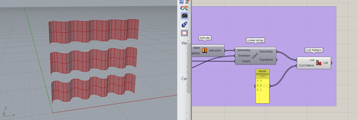

My Blog
Grasshopper 104
05/07/24
diseño paramétrico
Listas y vectores
descargo de responsabilidad:
LAHV Design es un proyecto personal sin fines de lucro, todos los recursos(redactados y/o descargables) aquí compartidos son libres de uso, sin embargo no me hago responsable de ninguna manera de las decisiones que terceros tomen con dicho recuso.
En este articulo veremos algunas operaciones para manipular Listas con elementos de rhino, sin embargo, primero es importante que es una estructura de árbol.
Grasshopper puede manipular grandes cantidades de información en un solo componente, sin embargo, para ponerles un orden los coloca en listas, si las operaciones se vuelven muy complejas las coloca en listas de listas. En el ejemplo de la imagen superior tenemos el mismo conjunto de centroides de área y en el lado de la izquierda tienen una estructura de árbol y en el lado derecho es una lista sencilla.
Analicemos cada una de las estructuras.
En la estructura de árbol podemos observar como se organizan por grupos de objetos contenidos en este caso en columnas el primer grupo tiene el trayecto ó path correspondiente a {0,0,0} del lado de rhino gracias al componente llamado “point list” podemos verlo como el grupo de números en color negro.
Supongamos que deseo alcanzar el objeto del numero 4 del grupo color rojo (la 7ma columna de izquierda a derecha), si yo coloco un componente de rama de árbol “tree branch y le coloco el indice 6 veamos que sucede.
Me arroja un error porque lo que necesita el componente es una trayectoria.
ahora si me permite seleccionar toda la columna de la rama, ahora veamos como seleccionar el quinto elemento de la lista (representado por el numero 4 del lado de rhino)
Ahora si me permite seleccionar el objeto 5 de el grupo 7 de objetos de mi estructura de árbol.
Aunque esto es muy claro con números muchas veces por comodidad es mejor usar una estructura aplanada veamos el concepto de “aplanado”
Esta es la forma que toma la misma definición de puntos pero en su versión “aplanada”
La figura de una flecha hacia abajo representa el comando flatten
Si comparamos las dos estructuras una parece que se redujo en tamaño sustancialmente.
Sin embargo lo que sucedió es que todo dejo de tener sub grupos dentro de la lista principal.
Ahora si queremos seleccionar el objeto del ejemplo anterior que pertenecia al grupo 7 elemento 5 en el lado derecho corresponde al objeto 64.
En el ejemplo del árbol aplanado si podemos usar un list item sencillamente con indicar el numero del índice que corresponde el objeto de la lista.
Ahora veamos otras operaciones con listas sencillas que podemos realizar.
Tomaremos como ejemplo una lista de números generados al azar con el componente “random”
El componente random está conectado a la entrada del componente “round” cuya función es la de redondear hacia arriba o hacia abajo los números al azar generados por el componente random ya que por naturaleza son decimales.
el primer componente muy útil es “sort list” este componente ordena en orden ascendente la lista de números del lado izquierdo.
Este componente es muy útil cuando buscamos el elemento con mayor longitud en una lista lo que haremos es de un componente cuya salida sean curvas colocamos un componente que ya vimos llamado “lenght” y lo colocamos en la entrada “KEYS” de este componente y en values A en la entrada de sort list conectaremos la lista de curvas así asociaremos las longitudes con los elementos en orden ascendente y el mas largo debería ser el ultimo elemento de la lista.
Recuerda que si le aplicas la propiedad “reverse” a la salida puedes hacer que el orden sea descendente.
esto lo logras haciendo clic derecho en la variable de salida y seleccionando "reverse"
El siguiente componente es “replace ítems” lo que hace es sustituir el índice que requeras con el valor que indiques.
Para este ejemplo sustituí el elemento número 5 de la lista con el valor 10 en lugar del número 7 de la lista original.
El siguiente componente se llama “Split list” y este como su nombre lo indica parte una lista en dos usando un índice de la lista original como referencia en este caso use el índice numero 4 para dividir las dos listas.
El comando “shift list” lo que hace es tomar lo valores a partir del índice indicado y mandarlos al final de la lista.
Y con el boton booleano en falso lo que le decimos al componente es que elimine a partir de ese índice.
En este ejemplo tomamos la lista original del lado izquierdo y duplicamos cada índice por 2 como lo indica el panel en el componente de duplicar datos por lo que tendremos números consecutivos repetidos, así mismo el trabajo del componente “delete consecutive” es ese mismo, eliminar elementos repetidos consecutivos.
Ahora mismo veremos unas aplicaciones de listas vectores y secuencias con elementos gráficos de rhinoceros para que quede un poco mas claro.
Primero crearemos un elemento de plano xy con el componente “XY plane” el cual nos creará un plano con el centro en la coordenada 0,0,0 de rhinoceros, ahora con una transformación “move” le indicaremos que necesito moverlo cierta distancia en alguna dirección, para eso usaremos el vector “unit X” para que se mueva cierta distancia en el eje x (existen unit X, unit Y y unit Z )
Para indicar la magnitud aprovechare que GH, todo lo maneja simultáneamente y creare una secuencia de números incrementales, que me evitara crear un comando mover para cada punto que necesito. con el componente “series” creare una numeración que comienza en cero (para que también me cree una copia del objeto en el origen). La entrada “step” le indica al componente el incremento que quiero tener, y la entrada “count” la cantidad de veces que deseo tener ese incremento.

Para indicar la magnitud aprovechare que GH, todo lo maneja simultáneamente y creare una secuencia de números incrementales, que me evitara crear un comando mover para cada punto que necesito. con el componente “series” creare una numeración que comienza en cero (para que también me cree una copia del objeto en el origen). La entrada “step” le indica al componente el incremento que quiero tener, y la entrada “count” la cantidad de veces que deseo tener ese incremento.
Lo que por consecuencia me crea un plano xy en el origen en 0,0,0 y lo mueve 15 unidades a la coordenada 15,0,0 y así sucesivamente hasta la coordenada 135,0,0.
Ahora moveremos ese grupo en 15 unidades también.
listo ya puedes ver como quedo movido lo único que hice fue sacar el numero 15 del slider del incremento de la instrucción anterior y meterlo como distancia en el componente unit Y para moverlos todos en la coordenada 0,15,0.
Vamos a ver ahora que podemos hacer para crear una polilínea.
Primero, colocaremos un componente llamado “merge” para poder unir las dos listas de objetos los que se movieron en X y los que se movieron en Y y unirlos en una sola lista de objetos.
Entonces colocaremos un componente de “polyline” en la salida del “merge” para ver como los va uniendo conforme se fueron creando…. Vamos a manipular un poco esa lista para que sea una forma específica.
Veamos que esta sucediendo aquí, la entrada de “stream 0” y “stream 1” son las mismas y están en el mismo orden visualmente que en la imagen anterior, sin embargo el componente merge, toma todos los elementos de la segunda lista y los coloca debajo de los elementos de la primera lista, a diferencia “weave” teje los elementos en el orden que tu le indiques con números, en la entrada “pattern” en este caso esta tomando un elemento de el stream 0 y lo coloca en el índice cero de la nueva lista, después coloca 2 elementos de la lista en stream 1 y los coloca en los índices siguientes luego regresa a tomar un elemento de la lista cero y lo coloca después, al final , esto se repite y vuelve a leer el patrón.
Esto tiene como consecuencia que se crea una figura tipo zig-zag.
Ahora veamos como podemos crear una geometría diferente con ese zig-zag.
el patron que generamos con el weave nos sirve para hacer una curva controlada por puntos nurbs.
Similar a la que conocemos en rhino como control point curve.
Lo que haremos después será conectar esa curva a una extrusión básica cuya altura será en el eje Z por lo que usamos un “unit Z” para esta instrucción y el factor del componente lo saco del componente inicial con el numero 15 solo por mantener coherencia en el programa y evitar colocar muchos paneles. Estos dos componentes alimentan las entradas de el siguiente componente veamos que hace.
El componente siguiente es una forma un poco mas condensada de usar un matriz lineal de objetos en rhinoceros, en imágenes anteriores al inicio veíamos como podíamos usar el comando mover conectado a un componente de series para crear los incrementos, pues este componente hace lo mismo, pero todo dentro del mismo componente.
Ambas definiciones son correctas y hacen la misma funcion, como te puedes dar cuenta hay varias formas de realizar una accion, en grasshopper, por ello es un poco dificil, enseñar un lenguaje de programacion. Sin embargo, un buen programador siempre trata de mantener la lectura de sus programas lo mas claro e intuitivo posible.
El componente linear array es una funcion que se lee mucho mas clara que colocar un compoente de serie numerica en una transformacion de movimiento.
regresando a nuestra definicion podemos ver que se ha creado una lista simple que contiene 10 objetos y para poder seleccionar uno de ello debo usar un componente “list item” donde me pide que le brinde el numero del indice del objeto como queria seleccionar el tercer objeto de la lista mi indice será el número 2.
Por el contrario si lo que buscamos es eliminar de la lista un elemento especifico podemos usar el componente “cull item”
Y asi como el “weave” te permite combinar listas en cierto orden "cull pattern" te permite eliminar elementos en cierto patron de una lista.
Hemos llegado al final de este artículo, como siempre espero que este recurso te haya sido de ayuda. Te recuerdo que te dejo en un archivo comprimido el archivo de rhino .3dm y el archivo de grashopper .gh para que puedas ver mejor lo que vimos en este artículo.
descarga los documentos de este articulo desde aqui.© Your Site Name. All Rights Reserved. Designed by HTML Codex